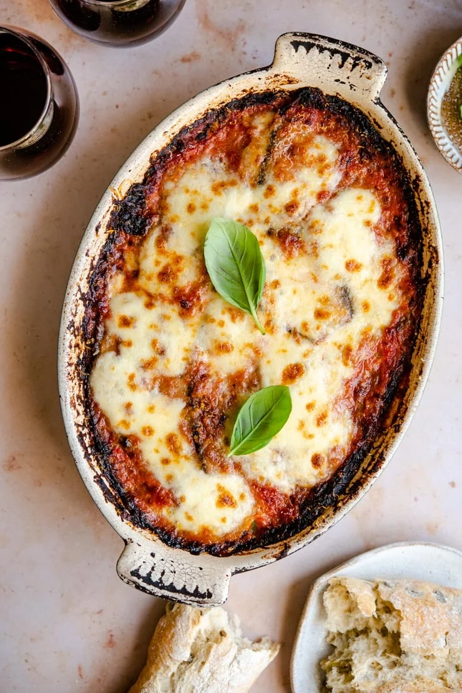

Parmigiana di Melanzane

Parmigiana di Melzansane is the ultimate
comfort food recipe.
Parmigiana di Melanzane is one of my
absolute favorite authentic Italian recipes.
The layers of fried eggplant, mozzarella cheese, and parmesan baked
togteher with a simple tomatoe sauce just tastes like heaven.
Ingredients
- eggplant
- pureed tomatoes
- white onion
- Small bunch of basil
- Cubed mozzarella chese
- parmesan cheese freshly grated
- olive oil
- flour for dusting
- sunflower oil
- salt and pepper
Instructions
Thinly slice the eggplant then place them in a
colander. Sprinkle them lightly with salt and set them
aside for 1 hour. This drains off any excess water and
helps with flying.
Meanwhile, make the simple tomatoe sauce. Finely shop 1
onion and sauté in a pan with the olive oil until
translucent and soft but not browned. Add the tomato
puree and a small bunch of basil torn with your hands.
Add a pinch of salt and pepper, stir then let it simmer
gently for 10-15 minutes. Set aside.
Rinse the eggplant slices under cold water and pat them
dry wtih a kitchen towel or paper. Lightly dust them with
flour, shaking off any excess then fry them in sunflower olive
for a few seconds each side, drain on kitchen paper to
remove any excess oil.
Preheat the oven to 350F/gas mark 4. I used an
11x8 inch oval dish but a rectangle or square dish around
the same size will work too e.g 10x8 inch.
Spoon a small amount of tomatoe saunce into the bottom of
a baking dish and spread it around, this will stop the
eggplant from sticking.
Next add on layer of eggplant to the dish followed by a
sprinkling of parmesan cheese, cubes of mozzarella, a
sprinkling of pepper and couple spoons of tomato sauce.
Continue with the next layer until you have one top layer left.
For the top layer, spoon over the remaining tomato sauce
and top with parmesan and mozzarella. Cover loosely with
foil and bake for 20 minutes until nice and golden and bubbling on
top. Let it rest for 5 minutes before serving.